All clothesAlle kleding
Every piece of clothing and every outfit for your guh, with where to get it and what it costs.
Elk kledingstuk en elke outfit voor je guh, met waar je het krijgt en wat het kost.
| NameNaam | KindSoort | SlotVak | SourceBron | AboutOver | |
|---|---|---|---|---|---|
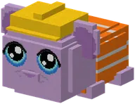 | Clothing set: Bob de GuhbouwerKledingset: Bob de Guhbouwer | Clothing setKledingset | Set | Bob de Guhbouwer | The clothes of Bob de Guhbouwer: 2 pieces.De kleding van Bob de Guhbouwer: 2 stukken. |
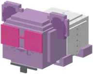 | Clothing set: De apotheekKledingset: De apotheek | Clothing setKledingset | Set | De apotheek | The clothes of De apotheek: 2 pieces.De kleding van De apotheek: 2 stukken. |
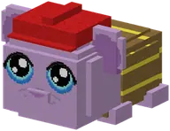 | Clothing set: De brandweerKledingset: De brandweer | Clothing setKledingset | Set | De brandweer | The clothes of De brandweer: 2 pieces.De kleding van De brandweer: 2 stukken. |
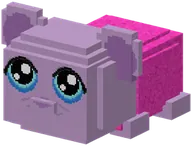 | Clothing set: De Brococolief-guhKledingset: De Brococolief-guh | Clothing setKledingset | Set | De Brococolief-guh | The clothes of De Brococolief-guh: 1 piece.De kleding van De Brococolief-guh: 1 stuk. |
 | Clothing set: De Elf-GuhjestochtKledingset: De Elf-Guhjestocht | Clothing setKledingset | Set | De Elf-Guhjestocht | The clothes of De Elf-Guhjestocht: 4 pieces.De kleding van De Elf-Guhjestocht: 4 stukken. |
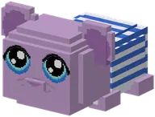 | Clothing set: De guh-kleermakerKledingset: De guh-kleermaker | Clothing setKledingset | Set | De guh-kleermaker | The clothes of De guh-kleermaker: 9 pieces.De kleding van De guh-kleermaker: 9 stukken. |
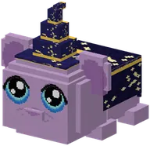 | Clothing set: De Guh-SterrenwachtKledingset: De Guh-Sterrenwacht | Clothing setKledingset | Set | De Guh-Sterrenwacht | The clothes of De Guh-Sterrenwacht: 2 pieces.De kleding van De Guh-Sterrenwacht: 2 stukken. |
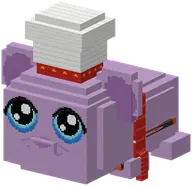 | Clothing set: De GuhbarbecuetherKledingset: De Guhbarbecuether | Clothing setKledingset | Set | De Guhbarbecuether | The clothes of De Guhbarbecuether: 3 pieces.De kleding van De Guhbarbecuether: 3 stukken. |
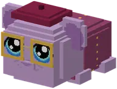 | Clothing set: De guhbibliotheekKledingset: De guhbibliotheek | Clothing setKledingset | Set | De guhbibliotheek | The clothes of De guhbibliotheek: 3 pieces.De kleding van De guhbibliotheek: 3 stukken. |
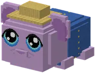 | Clothing set: De GuhboerderijKledingset: De Guhboerderij | Clothing setKledingset | Set | De Guhboerderij | The clothes of De Guhboerderij: 4 pieces.De kleding van De Guhboerderij: 4 stukken. |
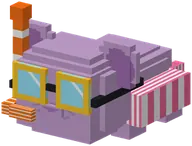 | Clothing set: De GuhbubbelKledingset: De Guhbubbel | Clothing setKledingset | Set | De Guhbubbel | The clothes of De Guhbubbel: 3 pieces.De kleding van De Guhbubbel: 3 stukken. |
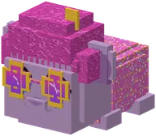 | Clothing set: De GuhdiscoKledingset: De Guhdisco | Clothing setKledingset | Set | De Guhdisco | The clothes of De Guhdisco: 4 pieces.De kleding van De Guhdisco: 4 stukken. |
 | Clothing set: De guhgolfbaanKledingset: De guhgolfbaan | Clothing setKledingset | Set | De guhgolfbaan | The clothes of De guhgolfbaan: 3 pieces.De kleding van De guhgolfbaan: 3 stukken. |
 | Clothing set: De guhkermisKledingset: De guhkermis | Clothing setKledingset | Set | De guhkermis | The clothes of De guhkermis: 3 pieces.De kleding van De guhkermis: 3 stukken. |
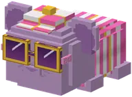 | Clothing set: De guhracebaanKledingset: De guhracebaan | Clothing setKledingset | Set | De guhracebaan | The clothes of De guhracebaan: 3 pieces.De kleding van De guhracebaan: 3 stukken. |
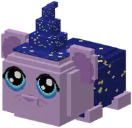 | Clothing set: De GuhramideKledingset: De Guhramide | Clothing setKledingset | Set | De Guhramide | The clothes of De Guhramide: 3 pieces.De kleding van De Guhramide: 3 stukken. |
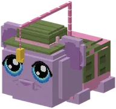 | Clothing set: De guhvisvijverKledingset: De guhvisvijver | Clothing setKledingset | Set | De guhvisvijver | The clothes of De guhvisvijver: 3 pieces.De kleding van De guhvisvijver: 3 stukken. |
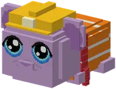 | Clothing set: De kaasmijnKledingset: De kaasmijn | Clothing setKledingset | Set | De kaasmijn | The clothes of De kaasmijn: 3 pieces.De kleding van De kaasmijn: 3 stukken. |
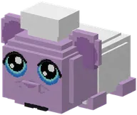 | Clothing set: De KnabbelbakkerijKledingset: De Knabbelbakkerij | Clothing setKledingset | Set | De Knabbelbakkerij | The clothes of De Knabbelbakkerij: 5 pieces.De kleding van De Knabbelbakkerij: 5 stukken. |
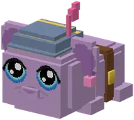 | Clothing set: De KnabbelkatapultKledingset: De Knabbelkatapult | Clothing setKledingset | Set | De Knabbelkatapult | The clothes of De Knabbelkatapult: 3 pieces.De kleding van De Knabbelkatapult: 3 stukken. |
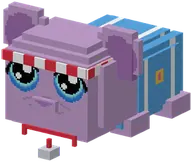 | Clothing set: De KnabbelspelenKledingset: De Knabbelspelen | Clothing setKledingset | Set | De Knabbelspelen | The clothes of De Knabbelspelen: 3 pieces.De kleding van De Knabbelspelen: 3 stukken. |
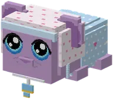 | Clothing set: De KnuffelcrecheKledingset: De Knuffelcreche | Clothing setKledingset | Set | De Knuffelcreche | The clothes of De Knuffelcreche: 3 pieces.De kleding van De Knuffelcreche: 3 stukken. |
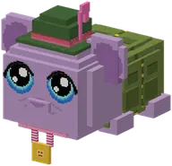 | Clothing set: De Mika-mephalKledingset: De Mika-mephal | Clothing setKledingset | Set | De Mika-mephal | The clothes of De Mika-mephal: 3 pieces.De kleding van De Mika-mephal: 3 stukken. |
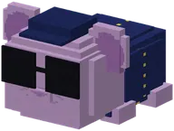 | Clothing set: De politieKledingset: De politie | Clothing setKledingset | Set | De politie | The clothes of De politie: 2 pieces.De kleding van De politie: 2 stukken. |
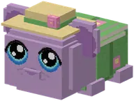 | Clothing set: De tuintjesKledingset: De tuintjes | Clothing setKledingset | Set | De tuintjes | The clothes of De tuintjes: 2 pieces.De kleding van De tuintjes: 2 stukken. |
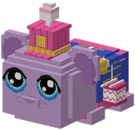 | Clothing set: De VadsparadeKledingset: De Vadsparade | Clothing setKledingset | Set | De Vadsparade | The clothes of De Vadsparade: 3 pieces.De kleding van De Vadsparade: 3 stukken. |
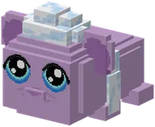 | Clothing set: De zwevende guh-eilandjesKledingset: De zwevende guh-eilandjes | Clothing setKledingset | Set | De zwevende guh-eilandjes | The clothes of De zwevende guh-eilandjes: 2 pieces.De kleding van De zwevende guh-eilandjes: 2 stukken. |
 | Clothing set: Guh Beauty TheaterKledingset: Guh Beauty Theater | Clothing setKledingset | Set | Guh Beauty Theater | The clothes of Guh Beauty Theater: 3 pieces.De kleding van Guh Beauty Theater: 3 stukken. |
| Clothing set: Guhdex-mijlpalenKledingset: Guhdex-mijlpalen | Clothing setKledingset | Set | Guhdex-mijlpalen | The clothes of Guhdex-mijlpalen: 3 pieces.De kleding van Guhdex-mijlpalen: 3 stukken. | |
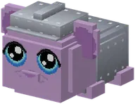 | Clothing set: GuhgrottenKledingset: Guhgrotten | Clothing setKledingset | Set | Guhgrotten | The clothes of Guhgrotten: 4 pieces.De kleding van Guhgrotten: 4 stukken. |
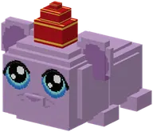 | Clothing set: HamsterhuizenKledingset: Hamsterhuizen | Clothing setKledingset | Set | Hamsterhuizen | The clothes of Hamsterhuizen: 3 pieces.De kleding van Hamsterhuizen: 3 stukken. |
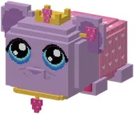 | Clothing set: Hartjes met je guhKledingset: Hartjes met je guh | Clothing setKledingset | Set | Hartjes met je guh | The clothes of Hartjes met je guh: 4 pieces.De kleding van Hartjes met je guh: 4 stukken. |
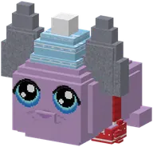 | Clothing set: Held van NomguhKledingset: Held van Nomguh | Clothing setKledingset | Set | Held van Nomguh | The clothes of Held van Nomguh: 4 pieces.De kleding van Held van Nomguh: 4 stukken. |
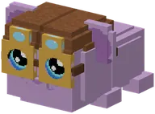 | Clothing set: Het BallonfestivalKledingset: Het Ballonfestival | Clothing setKledingset | Set | Het Ballonfestival | The clothes of Het Ballonfestival: 2 pieces.De kleding van Het Ballonfestival: 2 stukken. |
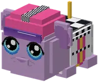 | Clothing set: Het Guh-CircuitKledingset: Het Guh-Circuit | Clothing setKledingset | Set | Het Guh-Circuit | The clothes of Het Guh-Circuit: 3 pieces.De kleding van Het Guh-Circuit: 3 stukken. |
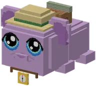 | Clothing set: Het GuhdoolhofKledingset: Het Guhdoolhof | Clothing setKledingset | Set | Het Guhdoolhof | The clothes of Het Guhdoolhof: 3 pieces.De kleding van Het Guhdoolhof: 3 stukken. |
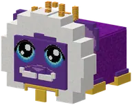 | Clothing set: Het guhkasteelKledingset: Het guhkasteel | Clothing setKledingset | Set | Het guhkasteel | The clothes of Het guhkasteel: 3 pieces.De kleding van Het guhkasteel: 3 stukken. |
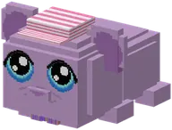 | Clothing set: Het guhlevenKledingset: Het guhleven | Clothing setKledingset | Set | Het guhleven | The clothes of Het guhleven: 2 pieces.De kleding van Het guhleven: 2 stukken. |
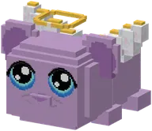 | Clothing set: Het HemelkapelletjeKledingset: Het Hemelkapelletje | Clothing setKledingset | Set | Het Hemelkapelletje | The clothes of Het Hemelkapelletje: 2 pieces.De kleding van Het Hemelkapelletje: 2 stukken. |
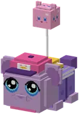 | Clothing set: Het kloon-eilandKledingset: Het kloon-eiland | Clothing setKledingset | Set | Het kloon-eiland | The clothes of Het kloon-eiland: 4 pieces.De kleding van Het kloon-eiland: 4 stukken. |
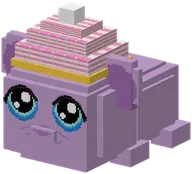 | Clothing set: Het Knabbelthee-huisjeKledingset: Het Knabbelthee-huisje | Clothing setKledingset | Set | Het Knabbelthee-huisje | The clothes of Het Knabbelthee-huisje: 1 piece.De kleding van Het Knabbelthee-huisje: 1 stuk. |
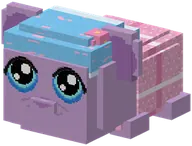 | Clothing set: Het KnuffelbadKledingset: Het Knuffelbad | Clothing setKledingset | Set | Het Knuffelbad | The clothes of Het Knuffelbad: 2 pieces.De kleding van Het Knuffelbad: 2 stukken. |
 | Clothing set: Het SjoelhuisjeKledingset: Het Sjoelhuisje | Clothing setKledingset | Set | Het Sjoelhuisje | The clothes of Het Sjoelhuisje: 3 pieces.De kleding van Het Sjoelhuisje: 3 stukken. |
 | Clothing set: Het Vadsig eetfestijnKledingset: Het Vadsig eetfestijn | Clothing setKledingset | Set | Het Vadsig eetfestijn | The clothes of Het Vadsig eetfestijn: 3 pieces.De kleding van Het Vadsig eetfestijn: 3 stukken. |
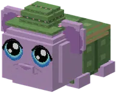 | Clothing set: Het VadswoudKledingset: Het Vadswoud | Clothing setKledingset | Set | Het Vadswoud | The clothes of Het Vadswoud: 4 pieces.De kleding van Het Vadswoud: 4 stukken. |
 | Clothing set: Het VerstopguhhuisKledingset: Het Verstopguhhuis | Clothing setKledingset | Set | Het Verstopguhhuis | The clothes of Het Verstopguhhuis: 3 pieces.De kleding van Het Verstopguhhuis: 3 stukken. |
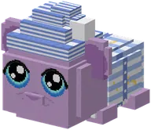 | Clothing set: Kamperen bij Opa GuhKledingset: Kamperen bij Opa Guh | Clothing setKledingset | Set | Kamperen bij Opa Guh | The clothes of Kamperen bij Opa Guh: 2 pieces.De kleding van Kamperen bij Opa Guh: 2 stukken. |
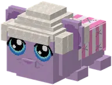 | Clothing set: Knip & VadsKledingset: Knip & Vads | Clothing setKledingset | Set | Knip & Vads | The clothes of Knip & Vads: 9 pieces.De kleding van Knip & Vads: 9 stukken. |
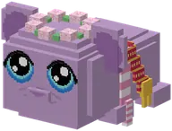 | Clothing set: KnuffeldalKledingset: Knuffeldal | Clothing setKledingset | Set | Knuffeldal | The clothes of Knuffeldal: 4 pieces.De kleding van Knuffeldal: 4 stukken. |
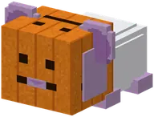 | Clothing set: MikahuizenKledingset: Mikahuizen | Clothing setKledingset | Set | Mikahuizen | The clothes of Mikahuizen: 3 pieces.De kleding van Mikahuizen: 3 stukken. |
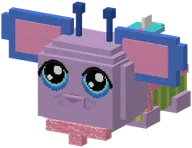 | Clothing set: Ohana op Guhwai'iKledingset: Ohana op Guhwai'i | Clothing setKledingset | Set | Ohana op Guhwai'i | The clothes of Ohana op Guhwai'i: 4 pieces.De kleding van Ohana op Guhwai'i: 4 stukken. |
 | Clothing set: PicknickmandenKledingset: Picknickmanden | Clothing setKledingset | Set | Picknickmanden | The clothes of Picknickmanden: 5 pieces.De kleding van Picknickmanden: 5 stukken. |
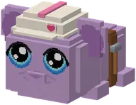 | Clothing set: Timmerguh's bouwplaatsKledingset: Timmerguh's bouwplaats | Clothing setKledingset | Set | Timmerguh's bouwplaats | The clothes of Timmerguh's bouwplaats: 2 pieces.De kleding van Timmerguh's bouwplaats: 2 stukken. |
| Clothing set: Zelf makenKledingset: Zelf maken | Clothing setKledingset | Set | Zelf maken | The clothes of Zelf maken: 1 piece.De kleding van Zelf maken: 1 stuk. | |
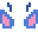 | 626-oren met antennes | Clothing pieceKledingstuk | EarsOren | Ohana op Guhwai'i | 626-oren met antennes is een kledingstuk voor je guh uit Guhs. |
| Babymutsje | Clothing pieceKledingstuk | HeadHoofd | De Knuffelcreche | Babymutsje is een kledingstuk voor je guh uit Guhs. | |
| Badjasje | Clothing pieceKledingstuk | BodyLijf | Het Knuffelbad | Badjasje is een kledingstuk voor je guh uit Guhs. | |
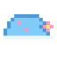 | Badmutsje | Clothing pieceKledingstuk | HeadHoofd | Het Knuffelbad | Badmutsje is een kledingstuk voor je guh uit Guhs. |
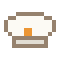 | Bakkersmutsje | Clothing pieceKledingstuk | HeadHoofd | De Knabbelbakkerij | Bakkersmutsje is een kledingstuk voor je guh uit Guhs. |
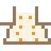 | Bakkersschortje | Clothing pieceKledingstuk | BodyLijf | De Knabbelbakkerij | Bakkersschortje is een kledingstuk voor je guh uit Guhs. |
| Ballonbril | Clothing pieceKledingstuk | EyesOgen | Het Ballonfestival | Ballonbril is een kledingstuk voor je guh uit Guhs. | |
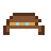 | Ballonpet | Clothing pieceKledingstuk | HeadHoofd | Het Ballonfestival | Ballonpet is een kledingstuk voor je guh uit Guhs. |
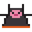 | Barbecueschort | Clothing pieceKledingstuk | BodyLijf | De Guhbarbecuether | Barbecueschort is een kledingstuk voor je guh uit Guhs. |
| Bloemenkrans | Clothing pieceKledingstuk | NeckNek | Ohana op Guhwai'i | Bloemenkrans is een kledingstuk voor je guh uit Guhs. | |
| Bloesemkransje | Clothing pieceKledingstuk | HeadHoofd | Knuffeldal | Bloesemkransje is een kledingstuk voor je guh uit Guhs. | |
| Boekenwurmvest | Clothing pieceKledingstuk | BodyLijf | De guhbibliotheek | Boekenwurmvest is een kledingstuk voor je guh uit Guhs. | |
| Boerderijhoedje | Clothing pieceKledingstuk | HeadHoofd | De Guhboerderij | Boerderijhoedje is een kledingstuk voor je guh uit Guhs. | |
| Boerderijzakdoek | Clothing pieceKledingstuk | NeckNek | De Guhboerderij | Boerderijzakdoek is een kledingstuk voor je guh uit Guhs. | |
| Boswachtershoed | Clothing pieceKledingstuk | HeadHoofd | Het Vadswoud | Boswachtershoed is een kledingstuk voor je guh uit Guhs. | |
| Boswachtersjas | Clothing pieceKledingstuk | BodyLijf | Het Vadswoud | Boswachtersjas is een kledingstuk voor je guh uit Guhs. | |
| Bouwhelm | Clothing pieceKledingstuk | HeadHoofd | Bob de Guhbouwer | Bouwhelm is een kledingstuk voor je guh uit Guhs. | |
| Brandweerhelm | Clothing pieceKledingstuk | HeadHoofd | De brandweer | Brandweerhelm is een kledingstuk voor je guh uit Guhs. | |
| Brandweerjas | Clothing pieceKledingstuk | BodyLijf | De brandweer | Brandweerjas is een kledingstuk voor je guh uit Guhs. | |
| Burgemeesterssjerp | Clothing pieceKledingstuk | BodyLijf | Knuffeldal | Burgemeesterssjerp is een kledingstuk voor je guh uit Guhs. | |
| Circuithelmpje | Clothing pieceKledingstuk | HeadHoofd | Het Guh-Circuit | Circuithelmpje is een kledingstuk voor je guh uit Guhs. | |
| Detectivejas | Clothing pieceKledingstuk | BodyLijf | Het Verstopguhhuis | Detectivejas is een kledingstuk voor je guh uit Guhs. | |
| Discokoptelefoontje | Clothing pieceKledingstuk | EarsOren | De Guhdisco | Discokoptelefoontje is een kledingstuk voor je guh uit Guhs. | |
| Doktersjas | Clothing pieceKledingstuk | BodyLijf | De apotheek | Doktersjas is een kledingstuk voor je guh uit Guhs. | |
| Doolhofkompasje | Clothing pieceKledingstuk | NeckNek | Het Guhdoolhof | Doolhofkompasje is een kledingstuk voor je guh uit Guhs. | |
| Duikbril | Clothing pieceKledingstuk | EyesOgen | De Guhbubbel | Duikbril is een kledingstuk voor je guh uit Guhs. | |
| Geblokte vlagcape | Clothing pieceKledingstuk | BackRug | Het Guh-Circuit | Geblokte vlagcape is een kledingstuk voor je guh uit Guhs. | |
| Gele oorstrikjes | Clothing pieceKledingstuk | EarsOren | De guh-kleermaker | Gele oorstrikjes is een kledingstuk voor je guh uit Guhs. | |
| Geleerdenbaret | Clothing pieceKledingstuk | HeadHoofd | De guhbibliotheek | Geleerdenbaret is een kledingstuk voor je guh uit Guhs. | |
| Geleerdenbrilletje | Clothing pieceKledingstuk | EyesOgen | De guhbibliotheek | Geleerdenbrilletje is een kledingstuk voor je guh uit Guhs. | |
| Gereedschapsriem | Clothing pieceKledingstuk | BodyLijf | Timmerguh's bouwplaats | With a little hammer, a folding rule and a nail pouch.Met een hamertje, een duimstok en een spijkerzakje. | |
| Gestreept zijden jockeyjasje | Clothing pieceKledingstuk | BodyLijf | De guhracebaan | Gestreept zijden jockeyjasje is een kledingstuk voor je guh uit Guhs. | |
| Gestreepte guhtrui | Clothing pieceKledingstuk | BodyLijf | De guh-kleermaker | Gestreepte guhtrui is een kledingstuk voor je guh uit Guhs. | |
| Glitterstrik | Clothing pieceKledingstuk | NeckNek | Guh Beauty Theater | Glitterstrik is een kledingstuk voor je guh uit Guhs. | |
| Glittervadspak | Clothing pieceKledingstuk | BodyLijf | De Guhdisco | Glittervadspak is een kledingstuk voor je guh uit Guhs. | |
| Gouden aureooltje | Clothing pieceKledingstuk | HeadHoofd | Het Hemelkapelletje | A golden halo floating above the head.Een gouden aureooltje dat boven het hoofd zweeft. | |
| Gouden guhmedaillon | Clothing pieceKledingstuk | NeckNek | Het guhkasteel | Gouden guhmedaillon is een kledingstuk voor je guh uit Guhs. | |
| Gouden hartjes-halsbandje | Clothing pieceKledingstuk | NeckNek | Hartjes met je guh | The prettiest collar there is, only for a zielsguh.Het allermooiste halsbandje dat er is, alleen voor een zielsguh. | |
| Grillguh-koksmuts | Clothing pieceKledingstuk | HeadHoofd | De Guhbarbecuether | Grillguh-koksmuts is een kledingstuk voor je guh uit Guhs. | |
| Guhfeesthoedje | Clothing pieceKledingstuk | HeadHoofd | Picknickmanden | Guhfeesthoedje is een kledingstuk voor je guh uit Guhs. | |
| Guhkermisstrik | Clothing pieceKledingstuk | NeckNek | De guhkermis | Guhkermisstrik is een kledingstuk voor je guh uit Guhs. | |
| Guhkoksbuis | Clothing pieceKledingstuk | BodyLijf | De Knabbelbakkerij | Guhkoksbuis is een kledingstuk voor je guh uit Guhs. | |
| Guhkoksmuts | Clothing pieceKledingstuk | HeadHoofd | De Knabbelbakkerij | Guhkoksmuts is een kledingstuk voor je guh uit Guhs. | |
| Guhlock-pet | Clothing pieceKledingstuk | HeadHoofd | Het Verstopguhhuis | Guhlock-pet is een kledingstuk voor je guh uit Guhs. | |
| Guhmonocle | Clothing pieceKledingstuk | EyesOgen | Guhdex-mijlpalen | Guhmonocle is een kledingstuk voor je guh uit Guhs. | |
| Guhregenjas | Clothing pieceKledingstuk | BodyLijf | De guh-kleermaker | Guhregenjas is een kledingstuk voor je guh uit Guhs. | |
| Guhrugzak | Clothing pieceKledingstuk | BackRug | Zelf maken | A little pink backpack for the back slot. While your guh wears it, the wardrobe tab Rugzak & harnas shows 18...Een roze rugzakje voor het rugvakje. Zolang je guh hem draagt, laat het kledingkast-tabblad Rugzak & harnas... | |
| Guhvisvest | Clothing pieceKledingstuk | BodyLijf | De guhvisvijver | Guhvisvest is een kledingstuk voor je guh uit Guhs. | |
| Guhzonnebril | Clothing pieceKledingstuk | EyesOgen | De guh-kleermaker | Guhzonnebril is een kledingstuk voor je guh uit Guhs. | |
| Guhzonneklep | Clothing pieceKledingstuk | EyesOgen | De guhgolfbaan | Guhzonneklep is een kledingstuk voor je guh uit Guhs. | |
| Guhzuidwester | Clothing pieceKledingstuk | HeadHoofd | De guh-kleermaker | Guhzuidwester is een kledingstuk voor je guh uit Guhs. | |
| Hartjesbril | Clothing pieceKledingstuk | EyesOgen | Guhdex-mijlpalen | Hartjesbril is een kledingstuk voor je guh uit Guhs. | |
| Hartjesspeldje | Clothing pieceKledingstuk | EarsOren | Hartjes met je guh | Lieve vadsjes van elkaar (100). | |
| Heksenhoed | Clothing pieceKledingstuk | HeadHoofd | Mikahuizen | Heksenhoed is een kledingstuk voor je guh uit Guhs. | |
| Hermelijnen koningsmantel | Clothing pieceKledingstuk | BodyLijf | Het guhkasteel | Hermelijnen koningsmantel is een kledingstuk voor je guh uit Guhs. | |
| Hula-rokje | Clothing pieceKledingstuk | BodyLijf | Ohana op Guhwai'i | Hula-rokje is een kledingstuk voor je guh uit Guhs. | |
| IJscopetje | Clothing pieceKledingstuk | HeadHoofd | Het guhleven | IJscopetje is een kledingstuk voor je guh uit Guhs. | |
| Jockeypetje | Clothing pieceKledingstuk | HeadHoofd | De guhracebaan | Jockeypetje is een kledingstuk voor je guh uit Guhs. | |
| Kaasmijnoverall | Clothing pieceKledingstuk | BodyLijf | De kaasmijn | Kaasmijnoverall is een kledingstuk voor je guh uit Guhs. | |
| Kapperscape | Clothing pieceKledingstuk | BodyLijf | Knip & Vads | Kapperscape is een kledingstuk voor je guh uit Guhs. | |
| Kapsel: Hanenkam | Clothing pieceKledingstuk | HairHaar | Knip & Vads | Kapsel: Hanenkam is a clothing piece for your guh in Guhs. Its in-game text (Dutch): Een hanenkam van pluis:...Een hanenkam van pluis: stoer van voren, lief van achteren. | |
| Kapsel: Knotjes | Clothing pieceKledingstuk | HairHaar | Knip & Vads | Kapsel: Knotjes is a clothing piece for your guh in Guhs. Its in-game text (Dutch): Twee knotjes bovenop, als...Twee knotjes bovenop, als twee kaasbolletjes. Superschattig. | |
| Kapsel: Krullen | Clothing pieceKledingstuk | HairHaar | Knip & Vads | Kapsel: Krullen is a clothing piece for your guh in Guhs. Its in-game text (Dutch): Een bos vadsige...Een bos vadsige krulletjes, overal. Niet te kammen, wel te knuffelen. | |
| Kapsel: Kuifje | Clothing pieceKledingstuk | HairHaar | Knip & Vads | Kapsel: Kuifje is a clothing piece for your guh in Guhs. Its in-game text (Dutch): Een stoer kuifje dat...Een stoer kuifje dat vooruit wijst: daar liggen de kaasknabbels! | |
| Kapsel: Matje | Clothing pieceKledingstuk | HairHaar | Knip & Vads | Kapsel: Matje is a clothing piece for your guh in Guhs. Its in-game text (Dutch): Van voren netjes, van...Van voren netjes, van achteren feest. Het beroemde guhmatje. | |
| Kapsel: Pluisbol | Clothing pieceKledingstuk | HairHaar | Knip & Vads | Kapsel: Pluisbol is a clothing piece for your guh in Guhs. Its in-game text (Dutch): Een enorme pluisbol: de...Een enorme pluisbol: de oren steken er gewoon doorheen. VAHOEG! | |
| Kapsel: Strikjes | Clothing pieceKledingstuk | HairHaar | Knip & Vads | Kapsel: Strikjes is a clothing piece for your guh in Guhs. Its in-game text (Dutch): Twee staartjes met witte...Twee staartjes met witte strikjes. Voor als je guh er extra lief uit wil zien. | |
| Kapsel: Vlechtjes | Clothing pieceKledingstuk | HairHaar | Knip & Vads | Kapsel: Vlechtjes is a clothing piece for your guh in Guhs. Its in-game text (Dutch): Twee lange vlechtjes...Twee lange vlechtjes met een strikje aan het eind. Bijna tot op de pootjes! | |
| Katapulthelmpje | Clothing pieceKledingstuk | HeadHoofd | De Knabbelkatapult | Katapulthelmpje is een kledingstuk voor je guh uit Guhs. | |
| Katapultriem | Clothing pieceKledingstuk | BodyLijf | De Knabbelkatapult | Katapultriem is een kledingstuk voor je guh uit Guhs. | |
| Kermisjasje | Clothing pieceKledingstuk | BodyLijf | De guhkermis | Kermisjasje is een kledingstuk voor je guh uit Guhs. | |
| Kerstmuts | Clothing pieceKledingstuk | HeadHoofd | Picknickmanden | Kerstmuts is een kledingstuk voor je guh uit Guhs. | |
| Kersttrui | Clothing pieceKledingstuk | BodyLijf | Picknickmanden | Kersttrui is een kledingstuk voor je guh uit Guhs. | |
| Knabbelspelen-sportshirtje | Clothing pieceKledingstuk | BodyLijf | De Knabbelspelen | Knabbelspelen-sportshirtje is een kledingstuk voor je guh uit Guhs. | |
| Knuffeltruitje | Clothing pieceKledingstuk | BodyLijf | Hartjes met je guh | Mega lieve vadsjes van elkaar (600). | |
| Knus sjaaltje | Clothing pieceKledingstuk | NeckNek | Knuffeldal | Knus sjaaltje is een kledingstuk voor je guh uit Guhs. | |
| Koksdoekje | Clothing pieceKledingstuk | NeckNek | De Guhbarbecuether | Koksdoekje is een kledingstuk voor je guh uit Guhs. | |
| Koningsdagkroontje | Clothing pieceKledingstuk | HeadHoofd | Picknickmanden | Koningsdagkroontje is een kledingstuk voor je guh uit Guhs. | |
| Koningskroon | Clothing pieceKledingstuk | HeadHoofd | Guhdex-mijlpalen | Koningskroon is een kledingstuk voor je guh uit Guhs. | |
| Koningsmantel | Clothing pieceKledingstuk | BodyLijf | De Guhramide | Koningsmantel is een kledingstuk voor je guh uit Guhs. | |
| Koorstrikje | Clothing pieceKledingstuk | NeckNek | Het guhleven | Koorstrikje is een kledingstuk voor je guh uit Guhs. | |
| Meelstrikje | Clothing pieceKledingstuk | NeckNek | De Knabbelbakkerij | Meelstrikje is een kledingstuk voor je guh uit Guhs. | |
| Mepvest met zakjes | Clothing pieceKledingstuk | BodyLijf | De Mika-mephal | Mepvest met zakjes is een kledingstuk voor je guh uit Guhs. | |
| Mieuwguh-ballonnetje | Clothing pieceKledingstuk | BackRug | Het kloon-eiland | A pink balloon that looks like Mieuwguh. It giggles in the wind.Een roze ballonnetje dat op Mieuwguh lijkt. Hij giechelt als het waait. Hihi! | |
| Guhtwo-staartje + nekbuisje | Clothing pieceKledingstuk | NeckNek | Het kloon-eiland | Now you're a bit of a Guhtwo too!Een zacht paars staartje met een bolletje en een nekbuisje. Nu ben jij ook een beetje Guhtwo! | |
| Mijnguhhelm | Clothing pieceKledingstuk | HeadHoofd | De kaasmijn | Mijnguhhelm is een kledingstuk voor je guh uit Guhs. | |
| Mika-jagershoed | Clothing pieceKledingstuk | HeadHoofd | De Mika-mephal | Mika-jagershoed is een kledingstuk voor je guh uit Guhs. | |
| Mika-mepper-medaille | Clothing pieceKledingstuk | NeckNek | De Mika-mephal | Mika-mepper-medaille is een kledingstuk voor je guh uit Guhs. | |
| Mintgroene oorstrikjes | Clothing pieceKledingstuk | EarsOren | De guh-kleermaker | Mintgroene oorstrikjes is een kledingstuk voor je guh uit Guhs. | |
| Miss Vadsig-sjerp | Clothing pieceKledingstuk | BodyLijf | Guh Beauty Theater | Miss Vadsig-sjerp is een kledingstuk voor je guh uit Guhs. | |
| Ontdekkingshoedje | Clothing pieceKledingstuk | HeadHoofd | Het Guhdoolhof | Ontdekkingshoedje is een kledingstuk voor je guh uit Guhs. | |
| Ontdekkingsrugzakje | Clothing pieceKledingstuk | BackRug | Het Guhdoolhof | Ontdekkingsrugzakje is een kledingstuk voor je guh uit Guhs. | |
| Oranje schaatssjaal | Clothing pieceKledingstuk | NeckNek | De Elf-Guhjestocht | Oranje schaatssjaal is een kledingstuk voor je guh uit Guhs. | |
| Oranje shirt | Clothing pieceKledingstuk | BodyLijf | Picknickmanden | Oranje shirt is een kledingstuk voor je guh uit Guhs. | |
| Paradejasje | Clothing pieceKledingstuk | BodyLijf | De Vadsparade | Paradejasje is een kledingstuk voor je guh uit Guhs. | |
| Paradesjako | Clothing pieceKledingstuk | HeadHoofd | De Vadsparade | Paradesjako is een kledingstuk voor je guh uit Guhs. | |
| Paradetrommeltje | Clothing pieceKledingstuk | NeckNek | De Vadsparade | Paradetrommeltje is een kledingstuk voor je guh uit Guhs. | |
| Pietenmuts | Clothing pieceKledingstuk | HeadHoofd | Hamsterhuizen | Pietenmuts is een kledingstuk voor je guh uit Guhs. | |
| Piratenhoed | Clothing pieceKledingstuk | HeadHoofd | Guhgrotten | Piratenhoed is een kledingstuk voor je guh uit Guhs. | |
| Piratenooglapje | Clothing pieceKledingstuk | EyesOgen | Guhgrotten | Piratenooglapje is een kledingstuk voor je guh uit Guhs. | |
| Pluisbal-oorbelletjes | Clothing pieceKledingstuk | EarsOren | De Knabbelkatapult | Pluisbal-oorbelletjes is een kledingstuk voor je guh uit Guhs. | |
| Pluizige oorwarmers | Clothing pieceKledingstuk | EarsOren | De Elf-Guhjestocht | Pluizige oorwarmers is een kledingstuk voor je guh uit Guhs. | |
| Plukmandje | Clothing pieceKledingstuk | BackRug | Het Vadswoud | Plukmandje is een kledingstuk voor je guh uit Guhs. | |
| Plukmuts | Clothing pieceKledingstuk | HeadHoofd | Het Vadswoud | Plukmuts is een kledingstuk voor je guh uit Guhs. | |
| Politie-uniform | Clothing pieceKledingstuk | BodyLijf | De politie | Politie-uniform is een kledingstuk voor je guh uit Guhs. | |
| Politiepet | Clothing pieceKledingstuk | HeadHoofd | De politie | Politiepet is een kledingstuk voor je guh uit Guhs. | |
| Pompoenhoofd | Clothing pieceKledingstuk | HeadHoofd | Mikahuizen | Pompoenhoofd is een kledingstuk voor je guh uit Guhs. | |
| Pyjamapakje | Clothing pieceKledingstuk | BodyLijf | Kamperen bij Opa Guh | Pyjamapakje is een kledingstuk voor je guh uit Guhs. | |
| Ridderhelm | Clothing pieceKledingstuk | HeadHoofd | Guhgrotten | Ridderhelm is een kledingstuk voor je guh uit Guhs. | |
| Riddersharnas | Clothing pieceKledingstuk | BodyLijf | Guhgrotten | Riddersharnas is een kledingstuk voor je guh uit Guhs. | |
| Rode guhstrik | Clothing pieceKledingstuk | NeckNek | De guh-kleermaker | Rode guhstrik is een kledingstuk voor je guh uit Guhs. | |
| Rompertje | Clothing pieceKledingstuk | BodyLijf | De Knuffelcreche | Rompertje is een kledingstuk voor je guh uit Guhs. | |
| Rood sjaaltje van Baltoguh | Clothing pieceKledingstuk | NeckNek | Held van Nomguh | Baltoguh's red scarf.Het rode sjaaltje van Baltoguh. | |
| Roze guhonesie | Clothing pieceKledingstuk | BodyLijf | De Brococolief-guh | Roze guhonesie is een kledingstuk voor je guh uit Guhs. | |
| Roze oorstrikjes | Clothing pieceKledingstuk | EarsOren | De guh-kleermaker | Roze oorstrikjes is een kledingstuk voor je guh uit Guhs. | |
| Roze smulschort | Clothing pieceKledingstuk | BodyLijf | Het Vadsig eetfestijn | Roze smulschort is een kledingstuk voor je guh uit Guhs. | |
| Ruitjesvadstrui | Clothing pieceKledingstuk | BodyLijf | De guhgolfbaan | Ruitjesvadstrui is een kledingstuk voor je guh uit Guhs. | |
| Schaatsmuts met pompom | Clothing pieceKledingstuk | HeadHoofd | De Elf-Guhjestocht | Schaatsmuts met pompom is een kledingstuk voor je guh uit Guhs. | |
| Scheidsrechtersfluitje | Clothing pieceKledingstuk | NeckNek | De Knabbelspelen | Scheidsrechtersfluitje is een kledingstuk voor je guh uit Guhs. | |
| Showster-tiara | Clothing pieceKledingstuk | HeadHoofd | Guh Beauty Theater | Showster-tiara is een kledingstuk voor je guh uit Guhs. | |
| Sinterklaasmijter | Clothing pieceKledingstuk | HeadHoofd | Hamsterhuizen | Sinterklaasmijter is een kledingstuk voor je guh uit Guhs. | |
| Sjoelbroche | Clothing pieceKledingstuk | NeckNek | Het Sjoelhuisje | Sjoelbroche is een kledingstuk voor je guh uit Guhs. | |
| Sjoelpetje | Clothing pieceKledingstuk | HeadHoofd | Het Sjoelhuisje | Sjoelpetje is een kledingstuk voor je guh uit Guhs. | |
| Sjoelvestje | Clothing pieceKledingstuk | BodyLijf | Het Sjoelhuisje | Sjoelvestje is een kledingstuk voor je guh uit Guhs. | |
| Slaapmutsje | Clothing pieceKledingstuk | HeadHoofd | Kamperen bij Opa Guh | Slaapmutsje is een kledingstuk voor je guh uit Guhs. | |
| Smulslabbetje | Clothing pieceKledingstuk | NeckNek | Het Vadsig eetfestijn | Smulslabbetje is een kledingstuk voor je guh uit Guhs. | |
| Sneeuwmuts met pompon | Clothing pieceKledingstuk | HeadHoofd | Held van Nomguh | Ice blue, with a snowflake band and two braids.IJsblauw, met een sneeuwvlokjesband en twee vlechtjes. | |
| Snorkel | Clothing pieceKledingstuk | HeadHoofd | De Guhbubbel | Snorkel is een kledingstuk voor je guh uit Guhs. | |
| Speenkettinkje | Clothing pieceKledingstuk | NeckNek | De Knuffelcreche | Speenkettinkje is een kledingstuk voor je guh uit Guhs. | |
| Spooklaken | Clothing pieceKledingstuk | BodyLijf | Mikahuizen | Spooklaken is een kledingstuk voor je guh uit Guhs. | |
| Sportzweetbandje | Clothing pieceKledingstuk | HeadHoofd | De Knabbelspelen | Sportzweetbandje is een kledingstuk voor je guh uit Guhs. | |
| Sterren-discobril | Clothing pieceKledingstuk | EyesOgen | De Guhdisco | Sterren-discobril is een kledingstuk voor je guh uit Guhs. | |
| Sterrencape | Clothing pieceKledingstuk | BodyLijf | De Guh-Sterrenwacht | Sterrencape is een kledingstuk voor je guh uit Guhs. | |
| Sterrenkijkersmuts | Clothing pieceKledingstuk | HeadHoofd | De Guh-Sterrenwacht | Sterrenkijkersmuts is een kledingstuk voor je guh uit Guhs. | |
| Stethoscoop | Clothing pieceKledingstuk | NeckNek | De apotheek | Stethoscoop is een kledingstuk voor je guh uit Guhs. | |
| Stoffige zakdoek | Clothing pieceKledingstuk | NeckNek | De kaasmijn | Stoffige zakdoek is een kledingstuk voor je guh uit Guhs. | |
| Strohoed | Clothing pieceKledingstuk | HeadHoofd | De Guhboerderij | Strohoed is een kledingstuk voor je guh uit Guhs. | |
| Surfplankje | Clothing pieceKledingstuk | BackRug | Ohana op Guhwai'i | Surfplankje is een kledingstuk voor je guh uit Guhs. | |
| Theemutsje | Clothing pieceKledingstuk | HeadHoofd | Het Knabbelthee-huisje | Theemutsje is een kledingstuk voor je guh uit Guhs. | |
| Timmermanshelmpje | Clothing pieceKledingstuk | HeadHoofd | Timmerguh's bouwplaats | Cream with a pink ridge and a heart sticker.Crème met een roze kammetje en een hartjessticker. | |
| Tovenaarshoed | Clothing pieceKledingstuk | HeadHoofd | De Guhramide | Tovenaarshoed is een kledingstuk voor je guh uit Guhs. | |
| Tovenaarsmantel | Clothing pieceKledingstuk | BodyLijf | De Guhramide | Tovenaarsmantel is een kledingstuk voor je guh uit Guhs. | |
| Trainerpakje | Clothing pieceKledingstuk | BodyLijf | Het kloon-eiland | A lilac vest and a backpack with a knabbelbal.Een lila trainersvestje en een rugzakje met een knabbelbal eraan. | |
| Trainerpetje | Clothing pieceKledingstuk | HeadHoofd | Het kloon-eiland | With our own logo: the knabbelbal with guh ears. Ik kies jou, njeg!Met ons eigen logo: de knabbelbal met guhoortjes. Ik kies jou, njeg! | |
| Tuinbroek | Clothing pieceKledingstuk | BodyLijf | De Guhboerderij | Tuinbroek is een kledingstuk voor je guh uit Guhs. | |
| Tuinhoedje | Clothing pieceKledingstuk | HeadHoofd | De tuintjes | Tuinhoedje is een kledingstuk voor je guh uit Guhs. | |
| Tuinschortje | Clothing pieceKledingstuk | BodyLijf | De tuintjes | Tuinschortje is een kledingstuk voor je guh uit Guhs. | |
| Vadsig vissershoedje | Clothing pieceKledingstuk | HeadHoofd | De guhvisvijver | Vadsig vissershoedje is een kledingstuk voor je guh uit Guhs. | |
| Vadsige bakkersmuts | Clothing pieceKledingstuk | HeadHoofd | Het Vadsig eetfestijn | Vadsige bakkersmuts is een kledingstuk voor je guh uit Guhs. | |
| Vadsige golfpet | Clothing pieceKledingstuk | HeadHoofd | De guhgolfbaan | Vadsige golfpet is een kledingstuk voor je guh uit Guhs. | |
| Vahoeg-racepak | Clothing pieceKledingstuk | BodyLijf | Het Guh-Circuit | Vahoeg-racepak is een kledingstuk voor je guh uit Guhs. | |
| Vahoege afropruik | Clothing pieceKledingstuk | HeadHoofd | De Guhdisco | Vahoege afropruik is een kledingstuk voor je guh uit Guhs. | |
| Vahoege guhkoningskroon | Clothing pieceKledingstuk | HeadHoofd | Het guhkasteel | Vahoege guhkoningskroon is een kledingstuk voor je guh uit Guhs. | |
| Vahoege kermishoed | Clothing pieceKledingstuk | HeadHoofd | De guhkermis | Vahoege kermishoed is een kledingstuk voor je guh uit Guhs. | |
| Vahoege racebril | Clothing pieceKledingstuk | EyesOgen | De guhracebaan | Vahoege racebril is een kledingstuk voor je guh uit Guhs. | |
| Veiligheidshesje | Clothing pieceKledingstuk | BodyLijf | Bob de Guhbouwer | Veiligheidshesje is een kledingstuk voor je guh uit Guhs. | |
| Vergroot-vadsglas | Clothing pieceKledingstuk | EyesOgen | Het Verstopguhhuis | Vergroot-vadsglas is een kledingstuk voor je guh uit Guhs. | |
| Vis-aan-de-haak | Clothing pieceKledingstuk | BackRug | De guhvisvijver | Vis-aan-de-haak is een kledingstuk voor je guh uit Guhs. | |
| Wantjes aan een touwtje | Clothing pieceKledingstuk | BodyLijf | Held van Nomguh | Red mittens on the front paws.Rode wantjes aan de voorpootjes. | |
| Wintersjaal | Clothing pieceKledingstuk | NeckNek | Hamsterhuizen | Wintersjaal is een kledingstuk voor je guh uit Guhs. | |
| Wolfsoortjes | Clothing pieceKledingstuk | EarsOren | Held van Nomguh | Ears slot: pointy wolf ears.Oren-vakje: spitse wolfsoortjes. | |
| Wolkenkraag | Clothing pieceKledingstuk | NeckNek | De zwevende guh-eilandjes | Wolkenkraag is een kledingstuk voor je guh uit Guhs. | |
| Wolkenmuts | Clothing pieceKledingstuk | HeadHoofd | De zwevende guh-eilandjes | Wolkenmuts is een kledingstuk voor je guh uit Guhs. | |
| Wolkenvleugeltjes | Clothing pieceKledingstuk | BackRug | Het Hemelkapelletje | Two puffy cloud wings with golden edges.Twee pluizige wolkenvleugeltjes met gouden randjes. | |
| Wollen schaatstruitje | Clothing pieceKledingstuk | BodyLijf | De Elf-Guhjestocht | Wollen schaatstruitje is een kledingstuk voor je guh uit Guhs. | |
| Zielskroontje | Clothing pieceKledingstuk | HeadHoofd | Hartjes met je guh | Zielsguh bff 5evr <3 (2000). | |
| Zonnehoedje | Clothing pieceKledingstuk | HeadHoofd | Knuffeldal | Zonnehoedje is een kledingstuk voor je guh uit Guhs. | |
| Zwarte guhstrik | Clothing pieceKledingstuk | NeckNek | De guh-kleermaker | Zwarte guhstrik is een kledingstuk voor je guh uit Guhs. | |
| Zwemband | Clothing pieceKledingstuk | BodyLijf | De Guhbubbel | Zwemband is een kledingstuk voor je guh uit Guhs. |